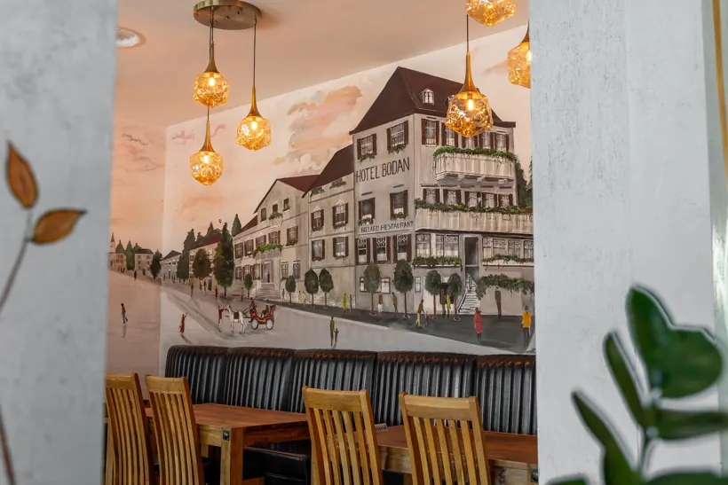

Ab 08:00 · Sa & So ab 10:00
Zmorge & Kaffee
Cappuccino, Gipfeli und Frühstück am Holztresen, bevor der Zug fährt.
Ab 11:30
Mittag
Mittagsmenü mit Salat oder Suppe, dazu ein Kaffee. Im hellen Saal mit Blick auf die Bahnhofstrasse.
Ab 17:00
Sushi & Steaks
Abends steht im Bodan alles im Zeichen von Sushi und Steaks. Die Rollen werden frisch geschnitten.
Den ganzen Abend
Pizza aus dem Ofen
Hauchdünn, auf Wunsch vegan, und für den grossen Tisch gibt es sie mit 50 cm Durchmesser.
Bis 23:00 · Fr & Sa bis 01:00
Lounge & Bar
Cocktails, Whisky und Bier vom Fass in den Lederpolstern. Dart gibt es auch.
Scrollen: ein Tag im Bodan
Zug oder Schiff
Wie viel Zeit bis zum Zug?
Der Bahnhof ist gleich gegenüber, das Schiff nach Friedrichshafen ein paar Minuten zu Fuss. Wählen Sie, wie viel Zeit Sie haben.
Sektor A bis F
Die Karte
Von Sushi bis Pizza für den ganzen Tisch: wählen Sie einen Sektor.
Preise in CHF wie auf der Online-Bestellkarte (Just Eat); im Restaurant können sie abweichen.

Restaurant · Lounge · Bar
Ein Haus mit Geschichte
An der Wand fahren noch die Kutschen vor dem alten Hotel Bodan vor. Davor: Holz, Kupferlampen und viel Platz, komplett renoviert.
- Spielraum für Kinder
- Lounge & Bar
- Raucherlounge
- Dart
- Terrasse
- TWINT & Karte
Familien und Gruppen
Platz für alle
Mit Kindern
Während die Grossen essen, spielen die Kleinen im eigenen Spielraum gleich nebenan.
Besonders toll fanden wir den liebevoll eingerichteten Spielraum für Kinder – perfekt für Familien.Dascha Seibel, Google
Gruppen & Feiern
Firmenfeier, Geburtstag oder Hochzeit: grosse Gruppen sind willkommen. Für den langen Tisch gibt es Pizza mit 50 cm Durchmesser.
Wir waren mit 10 verwöhnten Leuten da, alle sehr zufrieden!Markus Bihler, Google
Stimmen
Was Gäste sagen
- Nara★★★★★Google
Super Ort um beste Sushi Romanshorns zu probieren. Nette Service und direkt am Bahnhof. Gerne komme ich wieder.
- Victoria★★★★★Google
Wir waren mittlerweile schon mehrmals im Bodern Restaurant und sind wirklich jedes Mal aufs Neue begeistert. Das Essen ist einfach erstklassig – unglaublich lecker, qualitativ hochwertig und bisher hat uns wirklich jedes Gericht überzeugt.
- Wasim A. Elburawi★★★★★Google
D’Atmosphäre im Restaurant isch no drüber: modern, stylisch und doch total gmüetlich. Me fühlt sich wohl und cha guet relaaxe …
- M. B.★★★★★Google
Sehr leckeres Abendessen genossen in großer Gruppe mit 10 Personen und als Abschluss einen sensationellen Espresso. Sehr zu empfehlen. Wir gehen gerne wieder, wenn wir mit dem Boot wieder in Romanshorn anlegen!
- Sandra Günther★★★★★Google
Eine sehr schöne Lounge, ein wunderbares Ambiente. Wir wurden von Claudia bedient. Eine lustige und sehr aufmerksame Serviceangestellte. Vielen Dank an Claudia, die unseren Abend perfekt gemacht hat.
- Franziska★★★★★Google
Bin restlos begeistert von diesem Restaurant! … Die Pizzen sind ebenfalls hauchdünn und geschmacklich eine 10 von 10!
- Alfa Beta★★★★★Google
Vielen Dank für die freundliche Bedienung und Hilfe mit meinen Krücken heute Morgen zum Frühstück. Komme gerne wieder mal aus dem Berner Oberland bei Euch vorbei.
- Una Pietra★★★★☆Google
Das Bodan liegt perfekt gelegen und gut sichtbar gegenüber dem Bahnhof. Die Anbindung am ÖV ist exzellent.
Öffnungszeiten
Wann wir da sind
Heute
08:00 – 23:00
- Abholungab 11:30
- Lieferungab 17:00 über Just Eat
Besuch
Bodan Restaurant • LoungeBahnhofstrasse 1, 8590 Romanshorn
071 222 34 34
info@restaurant-bodan.ch
Bezahlen mit TWINT, Karte, bar oder WIR.
Anreise
- ZugBahnhof Romanshorn, gleich gegenüber
- Schiff & BootHafen am Bodensee, ein paar Minuten zu Fuss
- AutoKostenpflichtige Parkplätze in der Umgebung